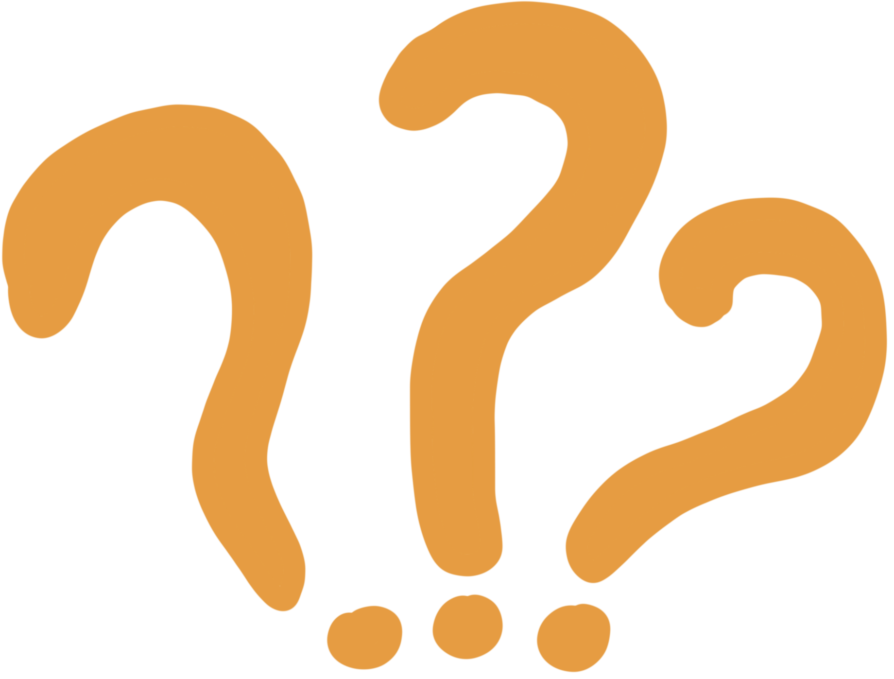

Art's Seditious Role in the 21st Century
The necessity of critical art in an age dominated by technology.
Preserving the Human Element
Critical art serves as a necessary cultural dialogue, providing the " meaning" and human connection that technology, which primarily makes "tools," cannot achieve alone.
Technology is generally driven by logic, efficiency, and functionality. Critical art, conversely, explores the human condition, emotion, and lived experience, qualities that machines currently lack. It reminds society of the importance of connection, empathy, and creativity that goes beyond mere utility.

Critical Art = Critical Thought
In this era of information overload, insular online groups, and potential misinformation, critical art encourages viewers to question sources, context, and underlying assumptions.
It challenges the passive consumption of digital content, urging active, discerning engagement by offering alternative perspectives and highlighting potential downsides that otherwise do not fit the narratives of these omnipresent platforms.

Radical Strangeness
Surveillance capitalism seeks to eliminate the unpredictiable elements that are often essential to artistic expression, such as non-conformity, innovation, and creativity.
Uncertainty is the crucial domain where creative action occurs. The seditious act of an artist must be to resist the move toward "false certainty" or predictable metrics at the expense of 'radical strangeness'. Philip Agre (1999) calls 'the radical strangeness' of the real world our source of our creativity, of our humanity.
...
"The drive toward total visibility and predictability alters not just our economy but our very sense of self and agency. ... This reduces the richness of human experience to quantifiable metrics, stripping away the organic innovation that arises from human creativity and improvisation"
"We end up substituting false certainty for the playful and creative uncertainty of life. In doing so, we eliminate the very conditions and possibilities where action, creativity, and innovation can occur"
- Kenneth Lipartito (2025)